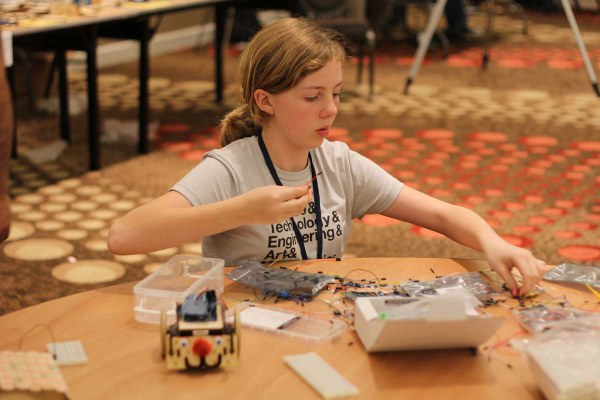
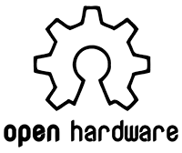

SumoBot Kit
This is an open source robot kit for laser cutting originally developed for NodeBots Day. It is meant to be super cheap and easy to assemble. It is available as an SVG file as well as a parameteric PSVG and an OpenSCAD file that you can customize to your specifications. Here's a video detailing assembly, but note that I currently do not recommend cutting cables. Instead, I am working on an arduino shield design to make the connections easier.
Because it is made of wood, you can easily customize it - glue things to it, paint it, drill it or dremel it. Check out this video by @noopkat for inspiration!
Want to see even more creative ideas? Check these photos from our nodebots day or this Make blog on RobotConf.
Currently in the works is more software for customization and programming, as well as an open lesson curriculum to teach robotics to beginners.
→ Get the kit from GitHub ←
OR
→ Download STLs from Thingiverse ←
